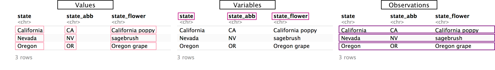
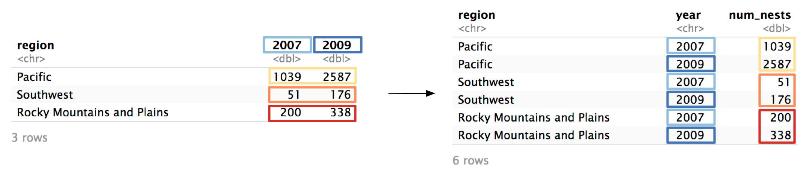
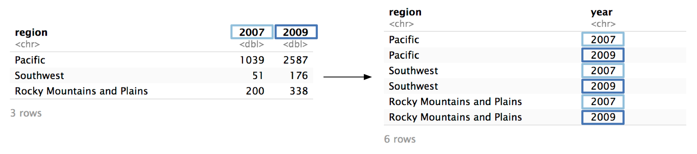
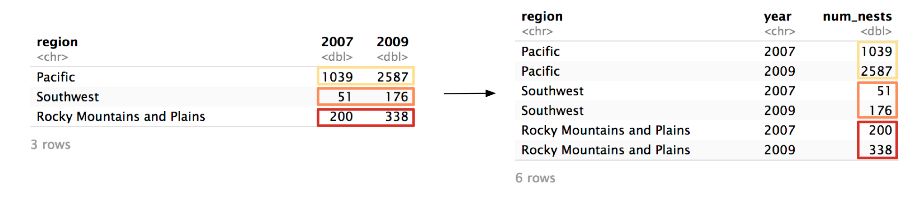
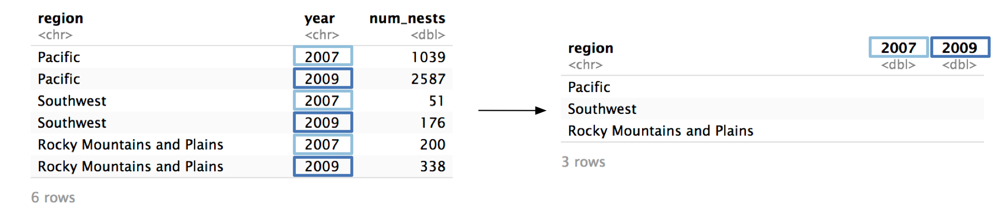
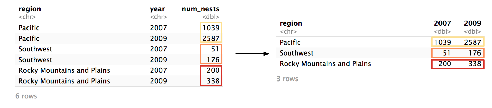

5 Basic pivoting
library(tidyverse)
library(dcldata)Most of the data you’ll encounter won’t be tidy, and it will be your job to figure out how to make it tidy. In this chapter, you’ll learn about two of the most important tidying tools: pivot_longer() and pivot_wider().
First, recall the characteristics of tidy data:
- Each value has its own cell.
- Each variable has its own column.
- Each observation has its own row.

Non-tidy data will not fulfill one or more of these characteristics.
5.1 Longer
example_eagle_nests contains data on the number of bald eagle nesting sites across multiple regions and years.
# Source: US Fish and Wildlife Service
example_eagle_nests
#> # A tibble: 3 × 3
#> region `2007` `2009`
#> <chr> <dbl> <dbl>
#> 1 Pacific 1039 2587
#> 2 Southwest 51 176
#> 3 Rocky Mountains and Plains 200 338The data isn’t tidy. In the following steps, we’ll show you how to tidy example_eagle_nests using pivot_longer().
Step 1: Identify the variables.
There are three variables in this dataset:
region: The US region where the nests are located.year: The year the nests were found.num_nests: The number of nests found.
Only one of these variables (region) is currently a column. Values of year are currently stored horizontally as column names, and values of num_nests are stored as values of 2007 and 2009. In order for this data to be tidy, we’ll need to pivot 2007 and 2009 into a year column, and the values of 2007 and 2009 into a num_nests column.

Now that we’ve identified the variables, we can start filling in our call to pivot_longer(). We’ll need three arguments, which we’ll identify over the next three steps.
example_eagle_nests %>%
pivot_longer(
# Step 2
# Step 3
# Step 4
)Step 2: Identify the columns to pivot.
To decide which columns to pivot, identify which columns are keeping the data from being tidy. In our example, those columns are 2007 and 2009.
2007 and 2009 are actually values of year, not variables themselves, and their values are actually values of num_nests.
The cols argument controls which columns pivot_longer() pivots.
example_eagle_nests %>%
pivot_longer(
cols = c(`2007`, `2009`),
# Step 3
# Step 4
)cols is similar to select(). You can specify columns by name, with contains(), starts_with(), etc. Here, we have to wrap 2007 and 2009 in backticks (` `) because they start with numbers.
Step 3: Name the column that will store the values from the column names.
Now, we’re just going to focus on the columns we identified in cols. Ultimately, pivot_longer() is going to move both the names of these columns and their values into new, separate columns.
First, we’ll focus on the column names: 2007 and 2009. pivot_longer()’s names_to argument controls the name of the column that will store the old column names. We want to name this new column "year". The argument is called names_to because you’re specifying which column to move the column names to.
example_eagle_nests %>%
pivot_longer(
cols = c(`2007`, `2009`),
names_to = "year",
# Step 4
)Note that the argument to names_to has to be in quotes, while the arguments to cols do not. It’s easy to get confused about which pivot arguments need to be quoted. Here’s the general rule: if you’re identifying an existing column (e.g., 2007), do not quote. If you’re talking about a column that does not currently exist (e.g., year), quote it.
Now, pivot_longer() will create a new column called year and fill it with the column names 2007 and 2009. Because we specified two columns in cols, we will get two values of year for each region.

Step 4: Name the column that will store the column values.
Now, we need to name the column that will store the values from 2007 and 2009.
Just as names_to controls the name of the column for the names, values_to controls the name of column for the values. In example_eagle_nests, the column values represent the number of nests, so we’ll name the new column "num_nests".
example_eagle_nests %>%
pivot_longer(
cols = c(`2007`, `2009`),
names_to = "year",
values_to = "num_nests"
)Again, notice that you have to quote any argument to values_to because it references a column that does not exist.
pivot_longer() will now move the values from 2007 and 2009 to a column called num_nests.

Here’s the function call again with the results.
example_eagle_nests %>%
pivot_longer(
cols = c(`2007`, `2009`),
names_to = "year",
values_to = "num_nests"
)
#> # A tibble: 6 × 3
#> region year num_nests
#> <chr> <chr> <dbl>
#> 1 Pacific 2007 1039
#> 2 Pacific 2009 2587
#> 3 Southwest 2007 51
#> 4 Southwest 2009 176
#> 5 Rocky Mountains and Plains 2007 200
#> 6 Rocky Mountains and Plains 2009 338The data is now tidy! pivot_longer() has many optional arguments, but cols, names_to, and values_to will cover most of your use-cases. The Missing values section below and the Advanced pivoting chapter cover some more specialized uses of pivot_longer().
Here’s another eagle-related example. example_eagle_pairs contains data on the number of observed bald eagle breeding pairs across years and states.
example_eagle_pairs
#> # A tibble: 48 × 12
#> state state_abbr `1997` `1998` `1999` `2000` `2001` `2002` `2003` `2004`
#> <chr> <chr> <int> <int> <int> <int> <int> <int> <int> <int>
#> 1 Alabama AL 22 23 26 27 NA NA 47 NA
#> 2 Arizona AZ 34 36 38 37 37 43 43 NA
#> 3 Arkansas AR 24 29 34 36 NA NA 36 42
#> 4 California CA 142 148 151 NA NA NA 160 NA
#> 5 Colorado CO 29 27 29 42 45 NA NA NA
#> 6 Connecticut CT 2 2 2 4 6 8 8 NA
#> # … with 42 more rows, and 2 more variables: 2005 <int>, 2006 <int>Again, the data isn’t tidy because values are spread across column names. We need to pivot all the year columns (1997 through 2006), moving their names into a column named "year" and their values into a column named "num_nests".
Here’s the full call to pivot_longer():
example_eagle_pairs %>%
pivot_longer(
cols = !starts_with("state"),
names_to = "year",
values_to = "num_pairs"
)
#> # A tibble: 480 × 4
#> state state_abbr year num_pairs
#> <chr> <chr> <chr> <int>
#> 1 Alabama AL 1997 22
#> 2 Alabama AL 1998 23
#> 3 Alabama AL 1999 26
#> 4 Alabama AL 2000 27
#> 5 Alabama AL 2001 NA
#> 6 Alabama AL 2002 NA
#> # … with 474 more rows5.2 Wider
pivot_wider() is the inverse of pivot_longer(). pivot_longer() moves data from column names to cell values, while pivot_wider() pulls data from cell values into column names, creating a wider tibble.
You’ll likely use pivot_longer() more often than pivot_wider() when tidying. Often, you’ll actually use pivot_wider() to un-tidy data. The non-tidy format may be more convenient for some tasks (e.g., creating a specific visualization).
To explain pivot_wider(), we’ll turn the tidied example_eagle_nests back into its original form. Here’s the tidied version:
example_eagle_nests_tidy
#> # A tibble: 6 × 3
#> region year num_nests
#> <chr> <chr> <dbl>
#> 1 Pacific 2007 1039
#> 2 Pacific 2009 2587
#> 3 Southwest 2007 51
#> 4 Southwest 2009 176
#> 5 Rocky Mountains and Plains 2007 200
#> 6 Rocky Mountains and Plains 2009 338Step 1 Identify the column whose values will supply the column names.
pivot_wider() turns the values from one column and turns them into column names. In our example, we want the unique values from year to become column names.

pivot_wider()’s names_from argument controls which column is pivoted into column names.
example_eagle_nests_tidy %>%
pivot_wider(
names_from = year,
# Step 2
)Notice that year is unquoted because, following the rule, year does exist in example_eagle_nests_tidy.
Step 2 Identify the column whose values will supply the column values.
Now, we need to identify the column that will supply the values of 2007 and 2009. In example_eagle_nests_tidy, that’s num_nests.

We specify num_nests as the values_from argument.
example_eagle_nests_tidy %>%
pivot_wider(
names_from = year,
values_from = num_nests
)
#> # A tibble: 3 × 3
#> region `2007` `2009`
#> <chr> <dbl> <dbl>
#> 1 Pacific 1039 2587
#> 2 Southwest 51 176
#> 3 Rocky Mountains and Plains 200 338Again, supply the name of the column unquoted.
We’re done! The tibble is now transformed back into its original form.
Let’s see an example of a tibble that actually does need pivot_wider() to be tidy. example_acs_1 contains data from the 2013-2017 American Community Survey, obtained through the tidycensus package.
example_acs_1
#> # A tibble: 156 × 4
#> geoid name variable estimate
#> <chr> <chr> <chr> <dbl>
#> 1 01 Alabama pop_housed 4731852
#> 2 01 Alabama pop_renter 1434765
#> 3 01 Alabama median_rent 747
#> 4 02 Alaska pop_housed 710743
#> 5 02 Alaska pop_renter 241484
#> 6 02 Alaska median_rent 1200
#> # … with 150 more rowsvariable and estimate are not really variables (if you see a variable named variable it’s a good sign you need pivot_wider()). There are three distinct values in variable:
example_acs_1 %>%
distinct(variable)
#> # A tibble: 3 × 1
#> variable
#> <chr>
#> 1 pop_housed
#> 2 pop_renter
#> 3 median_rentEach of these values is actually a variable whose values are currently stored in estimate. To pivot, we’ll set names_from to variable and values_from to estimate.
example_acs_1 %>%
pivot_wider(names_from = variable, values_from = estimate)
#> # A tibble: 52 × 5
#> geoid name pop_housed pop_renter median_rent
#> <chr> <chr> <dbl> <dbl> <dbl>
#> 1 01 Alabama 4731852 1434765 747
#> 2 02 Alaska 710743 241484 1200
#> 3 04 Arizona 6656124 2460534 972
#> 4 05 Arkansas 2894098 965690 709
#> 5 06 California 38168482 17066023 1358
#> 6 08 Colorado 5318396 1782975 1125
#> # … with 46 more rows5.3 Missing values
The United Nations compiles data on the origin and destination countries of international migrants. example_migration contains a subset of this data from 2017. The countries in the column names represent countries of origin, and the countries in dest represent destination countries.
example_migration
#> # A tibble: 3 × 6
#> dest Afghanistan Canada India Japan `South Africa`
#> <chr> <chr> <chr> <chr> <chr> <chr>
#> 1 Albania <NA> 913 <NA> <NA> <NA>
#> 2 Bulgaria 483 713 281 213 260
#> 3 Romania <NA> <NA> 102 <NA> <NA>Again, the data isn’t tidy. Afghanistan, Canada, etc. are values of a variable, not variables themselves. We can use pivot_longer() to tidy the data.
example_migration %>%
pivot_longer(cols = !dest, names_to = "origin", values_to = "migrants")
#> # A tibble: 15 × 3
#> dest origin migrants
#> <chr> <chr> <chr>
#> 1 Albania Afghanistan <NA>
#> 2 Albania Canada 913
#> 3 Albania India <NA>
#> 4 Albania Japan <NA>
#> 5 Albania South Africa <NA>
#> 6 Bulgaria Afghanistan 483
#> # … with 9 more rowsThere are a lot of NAs in the data. However, they don’t actually represent missing values. Someone didn’t forget to measure the number of migrants Afghanistan to Albania—there just weren’t any. It doesn’t really make sense to include these rows in our new, tidied dataset. We can use values_drop_na to exclude these rows.
example_migration %>%
pivot_longer(
cols = !dest,
names_to = "origin",
values_to = "migrants",
values_drop_na = TRUE
)
#> # A tibble: 7 × 3
#> dest origin migrants
#> <chr> <chr> <chr>
#> 1 Albania Canada 913
#> 2 Bulgaria Afghanistan 483
#> 3 Bulgaria Canada 713
#> 4 Bulgaria India 281
#> 5 Bulgaria Japan 213
#> 6 Bulgaria South Africa 260
#> # … with 1 more rowWhen you use values_drop_na = TRUE in pivot_longer(), you’re turning explicit missing values into implicit missing values. This is only a good idea if the NAs were in the non-tidy data for a purely structural reason, like in example_migration.
In contrast, example_eagle_pairs’s NAs aren’t structural and represent actual missing data. Paired Alabamian eagles probably existed in 2001, but the data isn’t there.
example_eagle_pairs
#> # A tibble: 48 × 12
#> state state_abbr `1997` `1998` `1999` `2000` `2001` `2002` `2003` `2004`
#> <chr> <chr> <int> <int> <int> <int> <int> <int> <int> <int>
#> 1 Alabama AL 22 23 26 27 NA NA 47 NA
#> 2 Arizona AZ 34 36 38 37 37 43 43 NA
#> 3 Arkansas AR 24 29 34 36 NA NA 36 42
#> 4 California CA 142 148 151 NA NA NA 160 NA
#> 5 Colorado CO 29 27 29 42 45 NA NA NA
#> 6 Connecticut CT 2 2 2 4 6 8 8 NA
#> # … with 42 more rows, and 2 more variables: 2005 <int>, 2006 <int>If we used values_drop_na = TRUE when we pivoted example_eagle_pairs, we would turn all these explicit missing values implicit, which isn’t a good idea.